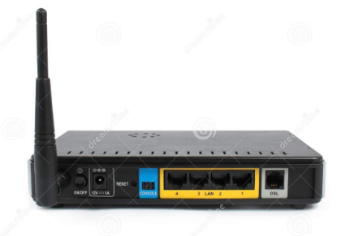

Módem, Estándares y Protocolos
¿Qué es un módem?

- La palabra módem proviene de la contracción de modulador-demodulador. Es un dispositivo de hardware fundamental que permite la comunicación entre computadoras u otros dispositivos digitales a través de redes analógicas.
- Su función principal es modular una señal digital generada por un dispositivo (como una computadora) en una señal analógica que pueda viajar a través de medios analógicos (como las líneas telefónicas), y luego demodular esa señal cuando llega a su destino, convirtiéndola nuevamente en digital para que pueda ser procesada.
- Los módems son vitales para la conexión a Internet, especialmente cuando se utilizan tecnologías como el ADSL, cable, fibra óptica o redes móviles (3G, 4G, 5G).
Funcionamiento general del módem
-
Modulación (en el emisor):
- Convierte datos digitales (bits) en señales analógicas mediante técnicas de modulación (ASK, FSK, PSK, QAM).
- Estas señales analógicas pueden viajar por líneas de transmisión tradicionales como el cable coaxial o la línea telefónica.
-
Transmisión:
- Las señales analógicas viajan a través del medio de transmisión hasta su destino (otro módem u otro tipo de receptor).
-
Demodulación (en el receptor):
- El módem receptor transforma las señales analógicas de vuelta a datos digitales para ser procesados por el equipo final.
Tipos de módems según el medio
-
Módem analógico
- Utiliza líneas telefónicas convencionales.
- Velocidades limitadas, típicamente hasta 56 kbps.
- Requiere marcar un número telefónico para conectarse a Internet.
- Prácticamente obsoleto en la actualidad.
-
Módem DSL (Digital Subscriber Line)
- Usa la misma línea telefónica, pero transmite datos en frecuencias distintas a las de voz.
- Permite conexión simultánea a Internet y llamadas.
- Velocidades desde cientos de Kbps hasta decenas de Mbps.
-
Cable módem
- Utiliza el cable coaxial de la televisión por cable.
- Conecta hogares y negocios a Internet mediante redes HFC (Hybrid Fiber-Coaxial).
- Velocidades altas, especialmente con tecnología DOCSIS 3.1 o superior.
-
Módem de fibra óptica
- Usa cables de fibra óptica para transmitir datos con luz.
- Velocidades extremadamente altas y baja latencia.
- Es la tecnología de acceso a Internet más moderna y eficiente.
-
Módems inalámbricos (WiFi, 4G/5G)
- Utilizan redes móviles o conexiones de radiofrecuencia.
- Ideales para ubicaciones donde no hay cableado físico.
- Ejemplos: módems USB 4G, hotspots WiFi, routers móviles.
Estándares de módems
Los estándares aseguran que equipos de distintos fabricantes sean compatibles entre sí y funcionen correctamente dentro de una red.
Principales estándares:
- V.92 y V.90: estándares ITU-T para módems telefónicos (hasta 56 kbps).
-
DOCSIS (Data Over Cable Service Interface Specification):
- Utilizado en cable módems.
- DOCSIS 3.0: hasta 1 Gbps.
- DOCSIS 3.1: hasta 10 Gbps.
- ADSL/ADSL2+/VDSL/VDSL2: estándares para módems DSL.
- FTTH (Fiber To The Home): tecnología de acceso por fibra óptica, sin interferencia electromagnética.
- IEEE 802.11: normas para redes WiFi (802.11n, 802.11ac, 802.11ax).
- 3GPP: define estándares para redes móviles como LTE (4G) y 5G.
Protocolos de comunicación de datos
Un protocolo es un conjunto de reglas que rige el formato, orden y control de la transmisión de datos. Los módems utilizan múltiples protocolos para garantizar que la información llegue de forma correcta.
Protocolos comunes:
-
PPP (Point to Point Protocol):
- Usado en conexiones punto a punto sobre líneas telefónicas o móviles.
- Control de errores y autenticación básica.
-
TCP/IP (Transmission Control Protocol / Internet Protocol):
- Base de la comunicación en Internet.
- TCP se encarga de asegurar que los paquetes lleguen completos y en orden.
- IP se encarga del direccionamiento y encaminamiento.
-
HTTP / HTTPS:
- Protocolo de transferencia de páginas web.
- HTTPS cifra la información (más seguro).
-
FTP (File Transfer Protocol):
- Para transferir archivos entre dispositivos.
- Requiere credenciales (usuario y contraseña).
-
SMTP, IMAP, POP3:
- Protocolos de correo electrónico.
- SMTP (envío), IMAP/POP3 (recepción).
-
DNS (Domain Name System):
- Traduce nombres de dominio (como google.com) a direcciones IP.